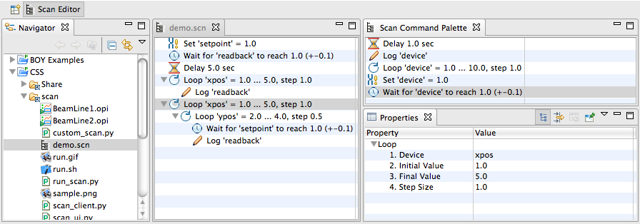

The scan system is used to automate experiments. For example, it can move a motor from some start position to an end position in certain steps, waiting at each step until experiment data has been taken.
A scan can consist of several nested loops. For example, at each step of moving the "horizontal" position of a sample, an inner loop can vary the "vertical" position of the sample to perform a 2-dimensional scan of the sample surface. As another example, an outer loop may vary the sample temperature while inner loops vary the sample position.
It is important to understand that the scan system uses separate tools to define a scan, to execute a scan and to monitor it:
This design allows scans to execute even if the original control system panel has been closed. Scans can be monitored, paused or aborted independent from the computer that submitted the scans.
The picture above shows a scan with two nested loops as it would appear in the Scan Editor. What follows is a description of all available commands.
This command sets a device to a desired value.
In addition to sending the desired value to the device, it can also wait for the device or an associated read-back device to actually reach the desired value.
Parameters:
Example:
Set 'setpoint' = 1.0
will write the value 1.0 to the "setpoint" device.
Set 'setpoint' = 1.0 (wait for 'readback' +-0.1, 10.0 sec timeout)
will also write the value 1.0 to the "setpoint" device.
In addition to the previous example the command will wait up to 10 seconds
for the "readback" device to reach the value of 1.0 with a tolerance of 0.1,
that is a value within 0.9 and 1.0.
This command waits for a device to reach a desired value.
The Set command described above already contains similar functionality, but it can only wait for a device to reach the absolute value to which it has been commanded. The separate wait command can be used to wait for a different value, or to wait for a device to increase or decrease by a certain value.
Parameters:
Examples:
Wait for 'readback' = 1.0 (+-0.1)
will wait until the value of the "readback" device reaches the value 1.0+-0.1,
i.e. is within the range of 0.9 ... 1.1.
Because of rounding errors and control system noise you should never
set the tolerance to 0.0 for the equality ('=') check,
because your device might never reach the exact desired value.
Configure a small tolerance like 0.001 to allow for rounding errors.
Wait for 'readback' > 5.0
will wait until the value of the "readback" device
is above 5.0.
Wait for 'readback' to increase by 5.0
will wait until the value of the "readback" device
increases by 5.0.
Assuming that the value was 10.0 when we reached this
wait command, the value would have to grow to at least
15.0 for the wait command to finish.
This command changes a device from a start to an end value. It is at the core of most scans.
Parameters:
Example:
Loop 'xpos' = 0.0 ... 5.0, step 1.0
will set the "xpos" device to 0.0, then 1.0, 2.0, 3.0, 4.0, 5.0.
At each step it will execute the "body" of the loop.
Loops can count "up" as well as "down". A loop from 0 to 5 in steps of 1 will operate as just mentioned. A loop from 5 to 0 in steps of -1 will assume values 5, 4, 3, 2, 1, 0. When specifying a step direction that does not match the loop direction, for example a loop from 0 to 5 in steps of -1, the loop will have a special behavior: It will toggle its direction each time it is executed. This can be useful for nested loops that are intended to scan a surface, as shown in the diagram below:

The normal scan displayed in the left diagram was executed with nested loops
Loop 'xpos' = 0.0 ... 5.0, step 1.0
Loop 'ypos' = 0.0 ... 5.0, step 1.0
The alternating scan displayed to the right was executed with nested loops
Loop 'xpos' = 0.0 ... 5.0, step 1.0
Loop 'ypos' = 0.0 ... 5.0, step -1.0
causing the inner loop on "ypos" to alternate direction each time is is executed. If these "xpos" and "ypos" devices are for example connected to stepper motors, the alternating scan will be faster and reduce wear on the motors.
Send values of devices to the log.
Parameters:
Example:
Log 'ypos', 'readback'
will send the current value of the "ypos" and "readback"
devices to the log.
Note that Loop, Set and Wait commands will automatically log the value of the device which they read. By default, this is the device to which the Loop and Set command write, unless a separate read-back device is specified.
This command simply delays the scan for a configurable number of seconds.
Parameters:
Example:
Delay 1.0 sec
will delay the scan for 1 second.
Note that you should avoid using the delay command. It is usually a bad idea to simply wait for a fixed amount of time, hoping that the experiment reached a desired state, for example a certain temperature or a certain amount of beam exposure.
If the temperature is already at the desired value before the delay expires, you have wasted time. If the beam should turn off, a simply delay will not notice this.
Instead of a delay, try to use the "Wait" command to wait for the desired state, for example for a readback to indicate the desired temperature, or for a beam current measurement device to indicate a certain amount of beam exposure.
The scan server is a program that executes submitted scans. There is typically one scan server instance per beam line.
When multiple scans are submitted, they are executed in the order of submission. If a user submits a scan while the scan server is still executing a scan, this will not impact the ongoing scan. The new scan is simply queued for execution after the current scan finishes. This also allows users to plan ahead, submitting scans for several experiment runs in advance, and the scan server will then execute them one after the other.
Users do not directly interact with the scan server. They use the Scan Editor or beamline-specific user interface panels to submit scans. Users can monitor the progress via directly monitoring the temperature, sample position or other experiment properties affected by the scan, or use the Scan Monitor to track the progress of a scan and potentially pause or abort it.
The scan server is maintained by a system administrator, it should for example run as a Linux service and thus always be available. End users can submit scans to the scan server, monitor their progress and also abort scans, but end users will typically not start or stop the scan server itself.
End users may have to know the host where the scan server is running
so that they can connect to the scan server from scripts,
or verify their CSS preference settings.
The CSS menu Edit/Preferences/Scan shows
the host name and port number for connecting to the scan server,
and scripts use Java properties ScanServerHost
and ScanServerPort for the respective settings.
The scan server itself if configured via a plugin customization file, review the one included in the server for an example.
The network communication between the scan server and clients like CSS is based on Java RMI and currently uses two TCP network ports:
ScanServerPort
or associated Eclipse preference is used by the RMI Registry.
Clients connect to this registry to locate the scan server
interface.
ScanServerPort+1,
is where the actual scan server binding is exported to clients.
To allow access to a scan server through firewalls, both TCP ports described in the previous section need to be opened for access by clients. Their defaults are 4810 and 4811.
The scan server can be executed on a host with multiple network interfaces, for example a host with a public network interface like 160.0.0.1 as well as a private network interface like 10.0.0.1. This does, however, require additional configuration.
The scan server will by default listen to connections on all available network interfaces, for example on the default TCP ports 4810 and 4811. But when a client connects to the registry on say 10.0.0.1:4810, i.e. the private network interface, the registry may return the address 160.0.0.1:4811, i.e. the public address of the scan server binding, or vice versa: A client connecting to the RMI registry on the public network may receive the private network address of the scan server binding.
One solution to this problem is to start the scan server with a Java property
java.rmi.server.hostname set like this that forces it to return a
specific host name for all client connections:
ScanServer -pluginCustomization .... -vmargs -Djava.rmi.server.hostname=scan_server_host
The RMI Registry will now always instruct clients to use scan_server_host:4811
to connect to the scan server binding.
Clients on the public network need to define this host name to match the public network address
of the host (scan_server_host = 160.0.0.1),
while clients on the private network need to define the same name to match
the private network address of the host (scan_server_host = 10.0.0.1).
On a Linux computer, this can be done via the file /etc/hosts.
The Scan Editor is a graphical editor for scan configurations. It shows the hierarchical structure of loops in a scan.
Basic Operation:
CSS/Scan/Scan Editor, or open
existing *.scn scan file
*.scn file
via the menu File/Save.
The Scan Monitor displays the current state of the Scan Server.

Access the scan monitor via the menu CSS/Scan/Scan Monitor
It lists which scans have been submitted to the server and their state:
The context menu and the toolbar buttons can be used to pause or abort the Running scan, and to remove completed scans from the server, i.e. scans that have either finished or have been aborted.
The Scan Plot can be used to track the progress of a scan. Data for devices that are "logged" is accessible to the plot.

Access the scan plotmonitor via the menu CSS/Scan/Scan Plot
Selectors in the toolbar of the plot allow selection of the following:
A key feature of the scan system is that scans can be submitted from various sources:
This provides a lot of options to programmers. At the same time, the details can be hidden behind for example a 'BOY' operator interface panel, so even users with no programming experience can then configure and execute these scans.
For now refer to org.csstudio.scan/examples
for details.